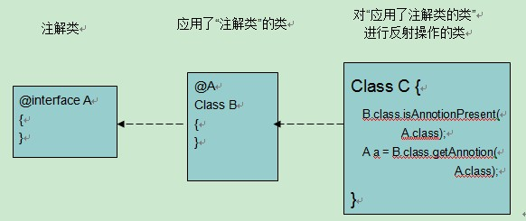

目录视图
目录视图 摘要视图
摘要视图 订阅
订阅版权声明：本文为博主原创文章，未经博主允许不得转载。
JDK1.5版本新特性
1、静态导入
2、可变参数
3、增强for循环
4、自动装箱和自动拆箱
5、枚举
6、注解
7、泛型
静态导入
1、写法：
import staticjava.util.Arrays.*;//导入的是Arrays这个类中的所以静态成员。
import staticjava.lang.System.*//导入了Ssytem类中所以静态成员。
没加static导入的是类，加上static导入的全是某一个类中所以的静态成员。这样写在调用该类的静态方法时可以不用再写类名。如：Arrays.sort(数组);就可以直接写sort(数组);
2、注意：
当导入的两个类中有同名成员时，需要在成员前加上相应的类名。
当类名重名时，需要指定具体的包名。当方法重名时，指定具体所属的对象或者类。
- import java.util.*;
- import static java.util.Arrays.*;
- import static java.lang.System.*;
- class StaticImport //extends Object
- {
- public static void main(String[] args)
- {
- out.println("haha");//打印输出时就可以直接省略书写System.
- int[] arr = {3,1,5};
- sort(arr);//使用Arrays工具类的方法sort时就可以省略书写Array.
- int index = binarySearch(arr,1);//半分查找也是一样可以省略
- out.println("Index="+index);
- //当没有指定继承时，所以类默认继承了Object，
- //因为toString方法都具备，所以为了区分，必须写上具体调用者
- out.println(Arrays.toString(arr));
- }
- }

可变参数：
VariableParameter
如果一个方法在参数列表中传入多个参数，个数不确定，那么每次都要复写该方法。这时可以用数组作为形式参数。但是在传入时，每次都需要定义一个数组对象，作为实际参数。在JDK1.5版本后，就提供了一个新特性：可变参数。
用…这三个点表示，且这三个点位于变量类型和变量名之间，前后有无空格皆可。
可变参数其实就是数组参数的简写形式。不用每一次都手动的建立数组对象。只要将要操作的元素作为参数传递即可。隐式将这些参数封装成了数组。
在使用时注意：可变参数一定要定义在参数列表的最后面。
示例：
- class ParamMethodDemo
- {
- public static void main(String[] args)
- {
- show("haha",2,3,4,5,6);
- }
- public static void show(String str,int... arr)//...就表示可变参数
- {
- System.out.println(arr.length);
- }
- }
1、格式：
for(数据类型变量名 :被遍历的集合（collection）或者数组) {执行语句}
2、说明
a、对集合进行遍历。只能获取集合元素。但是不能对集合进行操作。可以看作是迭代器的简写形式。
b、迭代器除了遍历，还可以进行remove集合中元素的动作。如果使用ListIterator，还可以在遍历过程中对集合进行增删改查的操作。
3、传统for和高级for的区别：
高级for有一个局限性。必须有被遍历的目标（集合或数组）。
传统for遍历数组时有索引。
建议在遍历数组的时候，还是希望使用传统for。因为传统for可以定义角标。
注意：变量类型前可加修饰符，如final（可被局部内部类访问到）。
示例：
- import java.util.*;
- class For
- {
- public static void main(String[] args)
- {
- //定义一个ArrayList集合
- ArrayList<String> al = new ArrayList<String>();
- al.add("abc1");
- al.add("abc2");
- al.add("abc3");
- for(String s : al)
- {
- System.out.println(s);//用高级for遍历集合
- }
- //传统for与高级for遍历数组
- int[] arr = {3,5,1};
- for(int x=0; x<arr.length; x++)
- {
- System.out.println(arr[x]);
- }
- for(int i : arr)
- {
- System.out.println("i:"+i);
- }
- //定义一个HashMap集合
- HashMap<Integer,String> hm = new HashMap<Integer,String>();
- hm.put(1,"a");
- hm.put(2,"b");
- hm.put(3,"c");
- //keySet取出方式的高级for遍历
- Set<Integer> keySet = hm.keySet();
- for(Integer i : keySet)
- {
- System.out.println(i+"::"+hm.get(i));
- }
- //entrySet取出方式的高级for遍历
- for(Map.Entry<Integer,String> me : hm.entrySet())
- {
- System.out.println(me.getKey()+"------"+me.getValue());
- }
- }
- }
自动拆箱和自动装箱
1、自动装箱：Integer iObj = 3;
2、自动拆箱：iObj + 2;
3、对于基本数据类型的说明：整数在-128 ~ 127之间的数，包装成Integer类型对象，会存入常量池中的缓存，再创建一个对象的时候，如果其值在这个范围内，就会直接到常量池中寻找，因为这些小数值使用的频率很高，所以缓存到常量池中，被调用时就方便很多。
4、享元模式（flyweight）：
1）概述：有很多个小的对象，他们有很多相同的属性，把属性相同的部分变为同一个对象，这些属性称为内部状态。那些不同的属性，把他们变成方法的参数，称之为外部的状态。这种优化内存，只创建一个对象的模式，称之为享元模式。例如：Integer对象中对象取值范围在-128~127时，其值相同的对象相等，因为这些小的数被缓存在一个池中，被调用的频率较高，所以通常在池中取，从而导致对象相同。这就是典型的享元设计模式。
2）应用：
（1）word中输入英文字母，可创建26对象，每个对象值是出现的位置不同（坐标），所以可用一个对象调用位置的方法：如，字母i：i.display(intx,inty)，将高度重复使用的char类型的字母i封装成一个对象使用。
（2）图标：window下的文件夹图标，只有名称这个属性不同，包含了很多其他相同的属性，那么可以应用享元模式。
3）valueOf(int x)：Integer中静态方法，将一个整数转换为Integer，即把基本数据类型变为包装类。
枚举
一、概述
这里说的枚举，不是集合vector的特有枚举迭代器，而是JDK1.5的一个新特性。之所以单独拿它开刷，是这个知识点比较重要，同时相对来说比较难理解一些。
为什么要有枚举
问题：要定义星期几或性别的变量，该怎么定义？假设用1-7分别表示星期一到星期日，但有人可能会写成int weekday = 0;或即使使用常量方式也无法阻止意外。
枚举就是要让某个类型的变量的取值只能为若干个固定值中的一个，否则，编译器就会报错。枚举可以让编译器在编译时就可以控制源程序中填写的非法值，普通变量的方式在开发阶段无法实现这一目标。
示例：
- /*
- * 用普通类如何实现枚举功能，定义一个Weekday的类来模拟枚举功能。
- 1、私有的构造方法
- 2、每个元素分别用一个公有的静态成员变量表示
- 3、可以有若干公有方法或抽象方法。采用抽象方法定义nextDay就将大量的if.else语句转移成了一个个独立的类。
- */
- package cn.itheima;
- public abstract class WeekDay {
- private WeekDay(){}
- public final static WeekDay SUN=new WeekDay(){
- public WeekDay nextDay(){
- return MON;
- }
- };
- public final static WeekDay MON=new WeekDay(){
- public WeekDay nextDay(){
- return SUN;
- }
- };
- public abstract WeekDay nextDay();
- public String toString(){
- return this==SUN?"SUM":"MON";
- }
- }
Enum是Java 语言枚举类型的公共基本类。
1、通过enum关键字定义枚举类，枚举类是一个特殊的类，每个元素都是该类的一个实例对象。
2、用枚举类规定值，如上面的WeekDay类。以后用此类型定义的值只能是这个类中规定好的那些值，若不是这些值，编译器不会通过。
3、好处：在编译时期就会发现错误，表明值不符合，减少了运行时期的错误。
4、如果调用者想打印枚举类中元素的信息，需由编写此类的人定义toString方法。
注：枚举类是一个class，而且是一个不可被继承的final类，其中的元素都是类静态常量。
5、常用方法：
构造器：
1）构造器只是在构造枚举值的时候被调用。
2）构造器只有私有private，绝不允许有public构造器。这样可以保证外部代码无法重新构造枚举类的实例。因为枚举值是public static final的常量，但是枚举类的方法和数据域是可以被外部访问的。
3）构造器可以有多个，调用哪个即初始化相应的值。
非静态方法：（所有的枚举类都继承了Enum类中的方法）
1）String toString() ;//返回枚举量的名称
2）int ordinal() ;//返回枚举值在枚举类中的顺序，按定义的顺序排
3）Class getClass() ;//获取对应的类名
4) String name();//返回此枚举常量的名称，在其枚举声明中对其进行声明。
静态方法：
1）valueOf(String e) ;//转为对应的枚举对象，即将字符串转为对象
2）values() ;//获取所有的枚举对象元素
示例：
- package cn.itheima;
- public class EnumDemo {
- public static void main(String[] args) {
- WeekDay weekDay=WeekDay.MON;
- System.out.println(weekDay);//输出枚举常量名
- System.out.println(weekDay.name());//输出对象名
- System.out.println(weekDay.getClass());//输出对应类
- System.out.println(weekDay.toString());//输出枚举对象名
- System.out.println(weekDay.ordinal());//输出此对象在枚举常量的次序
- System.out.println(WeekDay.valueOf("WED"));//将字符串转化为枚举常量
- System.out.println(WeekDay.values().length);//获取所以的枚举元素，并打印其长度
- }
- //定义枚举内部类
- public enum WeekDay{
- SUN(1),MON,TUE,WED,THI,FRI,SAT;//分号可有可无，但如果下面还有方法或其他成员时，分号不能省。
- //而且当有其他方法时，必须在这些枚举变量的下方。
- //无参构造器
- private WeekDay(){
- System.out.println("First");
- }
- //带参数的构造器
- private WeekDay(int day){
- System.out.println("Second");
- }
- }
- }
三、枚举的高级应用
1、枚举就相当于一个类，其中也可以定义构造方法、成员变量、普通方法和抽象方法。
2、枚举元素必须位于枚举体中的最开始部分，枚举元素列表的后要有分号与其他成员分隔。把枚举中的成员方法或变量等放在枚举元素的前面，编译器报告错误。
3、带构造方法的枚举
1）构造方法必须定义成私有的
2）如果有多个构造方法，该如何选择哪个构造方法？
3）枚举元素MON和MON（）的效果一样，都是调用默认的构造方法。
4、带方法的枚举
如：
- /*
- * 抽象的枚举方法
- * 此时枚举中的常量需要子类来实现，这是可以利用内部类的方式来定义枚举常量
- * 带方法的枚举
- 1）定义枚举TrafficLamp
- 2）实现普通的next方法
- 3）实现抽象的next方法：每个元素分别是由枚举类的子类来生成的实例对象，这些子类
- 4）用类似内部类的方式进行定义。
- 5）增加上表示时间的构造方法
- * */
- package cn.itheima;
- public class EnumTest {
- public enum TrafficLamp{
- RED(30){
- public TrafficLamp nextLamp(){
- return GREEN;
- }
- },
- GREEN(30){
- public TrafficLamp nextLamp(){
- return YELLOW;
- }
- },
- YELLOW(5){
- public TrafficLamp nextLamp(){
- return RED;
- }
- };
- private int time;
- //构造器
- private TrafficLamp(int time){
- this.time=time;}
- //抽象方法
- public abstract TrafficLamp nextLamp();
- }
- }
小结：
1、匿名内部类比较常用
2、类的方法返回的类型可以是本类的类型
3、类中可定义静态常量，常量的结果就是自己这个类型的实例对象
4、枚举只有一个成员时，就可以作为一种单例的实现方式。
注：
1、所有的枚举都继承自Java.lang.Enum类。由于Java不支持多继承，所以枚举对象不能再继承其他类。
2、switch语句支持int,char,enum类型，使用枚举，能让我们的代码可读性更强。
注解
一、概述
1、注解（Annotation）相当于一种标记，在程序中加了注解就等于为程序打上了某种标记，没加，则等于没有某种标记。以后，javac编译器、开发工具和其他程序可以用反射来了解你的类及各种元素上有无何种标记，看你有什么标记，就去干相应的事。
2、标记可以加在包，类，字段，方法，方法的参数以及局部变量上。
3、在java.lang包中提供了最基本的注解(annotation)。
4、格式：@注解类名。
如果只有一个value名称的属性或其他属性缺省，则可@注解名（”属性值”）；
如果有多个或不缺省或者需重新赋值，则@注解名（属性名=”属性值”，…）。
二、java中三种最基本的注解
1、如@SuppressWarning(”deprecation”)：表示压制过时警告；或者说不要警告过时提示了
SupressWarning是告知编译器或开发工具等不需要再提示指定的警告了；
“deprecation”是警告的信息，即过时警告。
2、@Deprecated：表示告知调用者，该成员函数、字段等已经过时，不再推荐使用。
源代码标记@Deprecated是在JDK1.5中作为内置的annotation引入的，用于表明类(class)、方法(method)、字段(field)已经不再推荐使用，并且在以后的JDK版本中可能将其删除，编译器在默认情况下检测到有此标记的时候会提示警告信息。
例如：假定之前的某个类升级了，其中的某个方法已经过时了，不能够将过时的方法删除，因为可能会影响到之前调用此这个方法的某些程序，这时就可以通过在方法上加这个注解来标记。
3、@Override：表示下面的方法是在覆盖（父类方法），如果不存在覆盖，就会报错。
加上此注解，可对类中的方法判断是否是要覆盖的父类的方法。典型的例子即在类中覆盖equals(Object obj)方法时，其中的参数类型必须是Object，才能被覆盖；若不是，则不存在覆盖。此时如果加上了此注解就会提示警告。
三、注解的应用结构图

注解就相当于一个你的源程序中要调用的一个类，要在源程序中应用某个注解，得先准备好了这个注解类。就像你要调用某个类，得先有开发好这个类。
四、自定义注解及其应用
1、定义格式：@interface名称{statement}
如：
最简单的注解类：public @interface MyAnnotation{}
2、元注解（注解的注解）
即在定义注解类的时候加注解。如两个常用于元注解的注解：Retention和Target
1）Retetion：用于说明注解保留在哪个阶段（即注解的生命周期）。
一个注解的生命周期包含：java源程序--(javac)-->class文件--(类加载器)-->内存中的字节码
分别对应Retetion这个枚举类的值：
RetetionPolicy.SOURSE：java源文件时期，如@Overried和@SuppressWarning
RetetionPolicy.CLASS： class文件时期（默认阶段）
RetetionPolicy.RUNTIME：运行时期，如@Deprecated
如：在某注解类上加@Retention(RetentionPolicy.RUNTIME)，表示此注解会一直存在。
注：
1、当在源程序上加了注解，javac将java源程序编译为class文件时，会对注解的生命周期进行判断。如果该注解只保留在源程序，则编译时会将该注解进行相应的处理操作，如去掉。其他类推。
2、class文件中不是字节码，只有把class文件中的内容加载进内存，用类加载器加载处理后（进行完整的检查等处理），最终得到的二进制内容才是字节码。
2）Target：用于说明注解类的使用范围。如在方法上还是类上，默认值是任何地方。
其值可设置为枚举类ElementType类中的任何一个，包括：包、字段、方法、方法参数、构造器、类等值。取值为：
PACKAGE(包声明)
FIELD(字段声明)
ANNOTATION_TYPE(注释类型声明)
CONSIRUCTOR(构造器声明)
METHOD(方法声明)
PARAMETER(参数声明)
TYPE(类、接口（包含注释类型）或枚举声明)
LOCAL_VARIABLE(局部变量声明)
注意：其中代表类的值是TYPE。因为class、enum、interface和@interface等都是平级的，所以统属于Type。不可用CLASS表示。
3、注解的应用
通过反射方式来获取自定义的注解类，步骤跟注解的应用结构一致，
如：
第一、定义注解类：@interfaceA{}
第二、应用了“注解类”的类：@A class B{}
第三、对“应用注释类的类”进行反射操作的类：class c{...}，操作如下：
B.class.isAnnotionPresent(A.class);//判断是否存在此注解类
A a = B.class.getAnnotation(a.class);//存在的话则得到这个注释类的对象
示例：
- package cn.itheima.Demo;
- import java.lang.annotation.Retention;
- import java.lang.annotation.RetentionPolicy;
- @Retention(RetentionPolicy.RUNTIME)//元注释 表明该注解是在运行阶段
- //注解类
- public @interface MyAnnotation {
- }
- @MyAnnotation
- //应用类
- public class AnnotationDemo {
- @SuppressWarnings("deprecation")//此注解用于抑制过时信息的提示
- public static void main(String[] args) {
- System.runFinalizersOnExit(true); //这是一个过时了的方法 ,如果没有注解就会有警告提示
- //判断此类是否有MyAnnotation注解
- if (AnnotationDemo.class.isAnnotationPresent(MyAnnotation.class)) {
- //如果有，则获取该注解
- MyAnnotation annotation =AnnotationDemo.class.getAnnotation(MyAnnotation.class);
- System.out.println(annotation);
- }
- }
- }
五、为注解添加基本属性
1、属性：一个注解相当于一个胸牌，但仅通过胸牌还不足以区别带胸牌的两个人，这时就需要给胸牌增加一个属性来区分，如颜色等。
2、定义格式：同接口中的方法一样：String color();
定义缺省格式：String value() default “heima”;
3、应用：直接在注解的括号中添加自身的属性，如：
@MyAnnotation(color=”red”)
1）如果注解中有一个名称为value的属性，且你只想设置value属性（即其他属性都采用默认值或者你只有一个value属性），那么可以省略value=部分，例如：@SuppressWarnings("deprecation")。
2）可以为属性值指定缺省值（default），应用时同样可以重新设置属性值。
3）用反射方式获得注解对应的实例对象后，可以通过该对象调用属性对应的方法来获取属性值。
六、为注解增加高级属性
1、可以为注解增加的高级属性的返回值类型有：
1）八种基本数据类型
2）String类型
3）Class类型
4）枚举类型
5）注解类型
6）前五种类型的数组
2、数组类型的属性：
如：int[]arrayArr() default {1,2,3};//可以不定义默认值
应用：@MyAnnotation(arrayArr={2,3,4}) //可重新赋值
注：若数组属性中只有一个元素（或重新赋值为一个元素），这时属性值部分可省略大括号。
3、枚举类型的属性：
假设定义了一个枚举类TrafficLamp，它是EnumTest的内部类，其值是交通灯的三色。
定义：EnumTest.TrafficLamplamp();
应用：@MyAnnotation(lamp=EnumTestTrafficLamp.GREEN)
4、注解类型的属性：
假定有个注解类：MetaAnnotation，其中定义了一个属性：String value()
定义：MetaAnnotation annotation() default @MetaAnnotation(”xxx”);
应用：@MyAnnotation(annotation=@MetaAnnotation(”yyy”))//重新赋值
可以认为上面这个@MyAnnotation是MyAnnotaion类的一个实例对象，同样的道理，可以认为上面这个@MetaAnnotation是MetaAnnotation类的一个实例对象，调用代码如下：
MetaAnnotationma =MyAnnotation.annotation();
System.out.println(ma.value());
5、Class类型的属性：
定义：Class cls();
应用：@MyAnnotation(cls=AnnotationDemo.class)
注：这里的.class必须是已定义的类，或是已有的字节码对象
6、注解的详细语法可通过查看java语言规范了解即javaLanguage Specification
示例：
- package cn.itheima.demo;
- import java.lang.annotation.ElementType;
- import java.lang.annotation.Retention;
- import java.lang.annotation.RetentionPolicy;
- import java.lang.annotation.Target;
- @Retention(RetentionPolicy.RUNTIME)//元注释
- @Target({ElementType.METHOD,ElementType.TYPE})//元注解，指定使用范围
- //注解类
- public @interface MyAnnotation {
- String color() default "red" ;
- String value();
- //数组
- int[] arr() default {1,2,3};
- //枚举
- EnumTest.TrafficLamp lamp() default EnumTest.TrafficLamp.GREEN;
- //注解类
- MetaAnnotation annotation() default @MetaAnnotation("heima");
- //Class类
- Class clazz() default System.class;
- }
- import java.lang.reflect.Method;
- //注解类的应用，给属性赋值或者重新赋值
- @MyAnnotation(lamp=EnumTest.TrafficLamp.YELLOW,value="heima",
- clazz=AnnotationDemo.class,annotation=@MetaAnnotation("itheima"))
- //应用类
- public class AnnotationDemo {
- @SuppressWarnings("deprecation")//此注解用于抑制过时信息的提示
- @MyAnnotation("Method")//自定义注解应用在方法上
- public static void main(String[] args) throws NoSuchMethodException, SecurityException {
- System.runFinalizersOnExit(true); //这是一个过时了的方法 ,如果没有注解就会有警告提示
- //判断此类是否有MyAnnotation注解
- if (AnnotationDemo.class.isAnnotationPresent(MyAnnotation.class)) {
- //如果有，则获取该注解
- MyAnnotation annotation =AnnotationDemo.class.getAnnotation(MyAnnotation.class);
- System.out.println(annotation);//@cn.itheima.Demo.MyAnnotation()
- System.out.println(annotation.color());//red
- System.out.println(annotation.value());//heima
- System.out.println(annotation.arr().length);//3
- System.out.println(annotation.lamp());//YEllOW
- System.out.println(annotation.annotation().value());//itheima
- System.out.println(annotation.clazz());//class cn.itheima.demo.AnnotationDemo
- }
- //获取方法上的注解
- Method mainMethod=AnnotationDemo.class.getMethod("main",String[].class);
- MyAnnotation annotationMethod=(MyAnnotation) mainMethod.getAnnotation(MetaAnnotation.class);
- SuppressWarnings sw=mainMethod.getAnnotation(SuppressWarnings.class);
- System.out.println(sw);//null
- System.out.println(annotationMethod);//null
- }
- }
- 顶
- 0
- 踩
- 0
- 上一篇Java基础（正则表达式）
- 下一篇Java深入（反射）
我的同类文章
- •Java深入（内省、类加载器）2015-04-04
- •Java基础（网络编程）2015-03-27
- •Java基础（IOl流——File类、Properties类、打印流、序列流）2015-03-25
- •Java基础（IO流）2015-03-22
- •Java基础（集合框架——Collection、List、Set、泛型）2015-03-18
- •Java基础（正则表达式）2015-03-29
- •Java基础（GUI）2015-03-26
- •Java基础（其他对象System、时间类（Date、Calendar）、Math）2015-03-22
- •Java基础（集合——Map、Collcetions工具类）2015-03-20
- •Java基础（前面知识点总结）2015-03-17

- 猜你在找


暂无评论